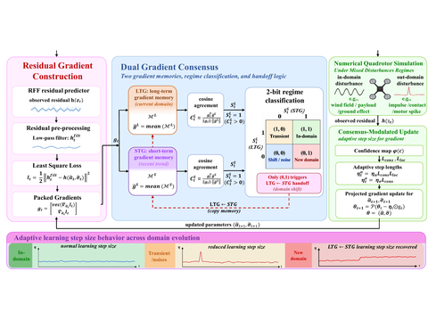

Dual Gradient Consensus for Adaptive Learning to Transient Out-of-Distribution Disturbances in Quadrotor Control
Under review at IEEE International Conference on Robotics and Automation (ICRA), 2027
Two gradient memories, long-term and short-term, vote on every online update of the learned disturbance model: when they disagree the step size shrinks, so a brief out-of-distribution pulse cannot corrupt the model, and once they agree again after a lasting shift the step size is restored. Lowest tracking error among all baselines on four mixed-disturbance benchmarks.